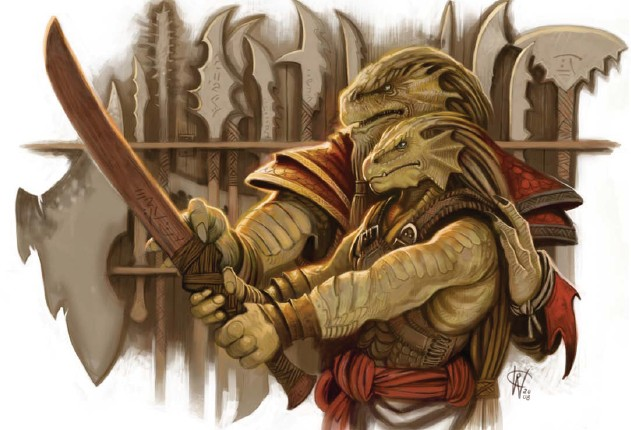
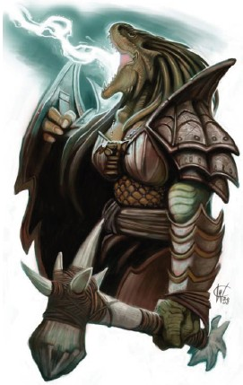
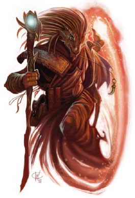

Culture drakéide
Les drakéides sont une race d'humanoïdes qui ressemblent aux dragons, avec une peau écailleuse et une tête de dragon. Ils sont fiers et courageux, et valorisent le clan, la tradition et la famille.
Physiologie
Les drakéides mesurent généralement plus de 1,80 mètre et ont une forte constitution, pesant plus de 125 kilos. Contrairement aux vrais dragons, ils n'ont ni ailes ni queue.
La peau d'un drakéide est recouverte de fines écailles. Les premiers drakéides étaient issus de lignées pures et quelques clans ont encore des écailles aux couleurs vives correspondant aux lignées des vrais dragons chromatiques et métalliques : rouge, vert, bleu, blanc, noir, or, argent ou cuivre. Mais au fil du temps les drakéides ont nuancé ces couleurs de par le métissage entre clans et leurs couleurs varient maintenant généralement dans des nuances métalliques ternes, comme l'écarlate, l'or, la rouille, l'ocre, le brun ou le vert cuivré. L’airain et le bronze sont les teintes pures les plus courantes.
La tête d'un drakéide ressemble à celle d'un dragon, mais placée sur un torse humanoïde et non sur le long cou d'un vrai dragon. Elle présente un museau émoussé, un front fort et des volants au niveau des oreilles et des joues, avec une crête d'écailles ressemblant à des cornes avec des mèches épaisses de cheveux derrière le front.
Leurs yeux sont de différentes nuances de rouge ou d'or. Ils ont des mains et des pieds forts, avec trois doigts et un pouce à chaque main. Les mains et les pieds se terminent par des griffes semblables à des serres.

Cycle de vie
Les drakéides éclosent à partir d'œufs. Les ruines de leurs anciennes civilisations possèdent des chambres spécialisées pour l'incubation des œufs. La famille d'un drakéide accorde beaucoup d'importance à l'apparence d’un œuf et à la manière dont il éclot ; un revêtement doré bruni, un motif ressemblant à un symbole ou un œuf qui se divise nettement en deux sont considérés comme particulièrement propices. Un nouveau-né est capable de marcher quelques heures après son éclosion. Il atteint le développement d'un humain de dix ans à l'âge de 3 ans et l'âge adulte à 15 ans.
L’espérance de vie d’un drakéide est de 80 ans. Cependant, peu d'individus vivent jusqu'à cet âge, car la plupart préfèrent une mort honorable au combat plutôt que mourir de vieillesse, et ils recherchent souvent cette fin lorsqu'ils deviennent vieux ou infirmes.
Personnalité
Les drakéides sont une race fière et volontaire, avec un sens aigu de l'honneur. La tradition et les liens claniques sont importants pour eux. L'honneur d'un drakéide est plus important que sa propre vie. On attend d’eux qu'ils agissent chevaleresquement sur le champ de bataille et qu'ils fassent preuve de respect envers leurs ennemis. La lâcheté et le brisement d’un serment sont les péchés les plus importants qu'un drakéide puisse commettre. L'honneur exige qu'ils assument la responsabilité de leurs actes, parlent honnêtement et honorent leurs engagements.
Les drakéides sont sérieux et motivés, et se consacrent volontiers à l'excellence. On peut compter sur un drakéide dans les moments difficiles. Ce sont des perfectionnistes qui n’aiment pas abandonner et acceptent difficilement l'échec. Nombre de drakéides rechercheront la mort s'ils ont été grandement déshonorés. D'autres feront tout pour regagner leur honneur. La plupart des drakéides accordent une grande importance à leur lien inné avec les vrais dragons. Cela affecte leur état d'esprit, et leur octroie une grande confiance en eux, une forte volonté et une intrépidité impressionnante. La patience est aussi une de leur vertu.
Les drakéides valorisent les clans. Ils s'intègrent facilement dans les sociétés humaines où leurs compétences et leur attitude honorable sont valorisées. Ils ont du respect pour les races qui partagent leurs valeurs traditionnelles, en particulier celles qui se consacrent à l'excellence dans quelque domaine qu’il soit. Ils sont soignés et font attention à leur apparence. Ils évitent les tatouages ou les embellissements similaires.
Société
Les membres d'un clan doivent être à la hauteur de sa réputation, de leurs ancêtres, de leurs héros de guerre, de leurs dirigeants bienveillants, de leurs artisans et de leurs diplomates. Les drakéides de clans déshonorés peuvent cacher ou dénoncer leur appartenance. Les ancêtres déshonorants incluent les traîtres, les déserteurs et ceux qui ont causé la ruine de leur peuple. Certains clans drakéides servent un vrai dragon, vivant dans le désert en tant que serviteurs.
HISTOIRE
Les premiers drakéides ont été créés par des dieux dragons et d'autres puissants dragons, qui ont fusionné les traits de races humanoïdes avec le pouvoir des dragons. La création des drakéides semble s'être produite indépendamment, à plusieurs reprises et par différentes méthodes.
Tiamat, la déesse à cinq têtes des dragons maléfiques, a créé des drakéides spécialement pour la servir dans sa guerre contre Bahamut, la divinité des dragons bons. Lui a refusé de s'abaisser à ce niveau, mais a reconnu le besoin de posséder ses propres agents. En 1359 CV, il lança l'Appel de Bahamut, qui lui redonna son statut divin.
La nation de Tymanther, située dans la région sud-est de Faerûn, est dirigée par les drakéides.
Les drakéides aiment les jeux et les concours, à la fois physiques et intellectuels. Cela inclue des sports violents tels des combats et des luttes, mais aussi des défis plus réfléchis tels que des jeux de société, des concours d'énigmes et des contes improvisés. Les jeux avec un seul vainqueur clair sont favorisés, plutôt que les sports d'équipe.
Noms
Les drakéides reçoivent un nom propre à la naissance, précédé du nom de leur clan. Ces noms de clan sont souvent dérivés des noms d'anciens seigneurs dragons, d'une guilde ou d'un ordre plus récent auquel appartient traditionnellement sa famille.
Art
L'art des drakéides allie fonctionnalité et beauté. Comme les artisans nains, il est rare qu’ils créent des peintures ou d'autres œuvres décoratives, bien qu'ils apprécient les bijoux, l'or et les parures de pierres précieuses, qu’ils portent de manière discrète et de bon goût. Leurs outils, armes et autres objets sont toujours fabriqués avec beaucoup de soin et d'habileté.
Les œuvres des drakéides ont tendance à utiliser des couleurs vives, des métaux précieux et des pierres précieuses. Les motifs courants incluent les dragons, les éléments et les écailles. Leur art n'a pas les détails ornés que l'on trouve dans les œuvres naines, mais les artisans drakéides accordent néanmoins une grande importance à la qualité, estimant qu'une œuvre reflète son créateur. Les anciennes cités drakéides contenaient de grandes structures de pierre élaborées, sculptées dans des falaises et des montagnes rocheuses solides, et gravées d'images.
Vêtements et artisanat
Les drakéides privilégient les vêtements simples et élégants faits de matériaux de qualité supérieure tels que le coton peigné, la laine douce, le lin croustillant ou la soie fine. Ils évitent les vêtements trop flamboyants et préfèrent donc les vêtements à la fois pratiques et beaux.
En ce qui concerne l'artisanat, ils possèdent une longue tradition, comme les nains. Ils considèrent que le forgeron qui a fabriqué l’armure d’un héros partage une partie de l'honneur de ses actes. De la même manière, un forgeron qui produit un équipement de qualité inférieure fait autant honte à lui-même qu’au guerrier qui le portera.
Religion
De nombreux drakéides vénèrent Bahamut, le dragon de platine, divinité des vrais dragons métalliques bons. Ses paladins et clercs les plus dévoués le considèrent comme un idéal de vérité, de justice, de miséricorde et de lumière dans les ténèbres. Lorsqu'un individu né avec des écailles de couleur platine, c'est le signe qu’il est destiné à servir le dragon de platine.
Les drakéides maléfiques vénèrent Tiamat, la déesse des dragons chromatiques. Ils sont très appréciés parmi les cultes de la déesse et servent dans ses armées, parfois plus par peur que par loyauté.
Les drakéides ont tendance à choisir un camp ou l'autre dans toute cause morale. Dans le désert, ils suivent souvent des religions animistes qui vénèrent les esprits de la nature, en particulier les anciens esprits des dragons. Certains clans dans les royaumes civilisés pratiquent encore cette tradition.
Mais en réalité, pour beaucoup de drakéides la religion est une chose très personnelle. Les rituels tels que les cérémonies de mariage sont menés par les anciens du clan de manière plutôt laïque et les noms des dieux ne sont qu’invoqués.
Traduit et compilé par blueace